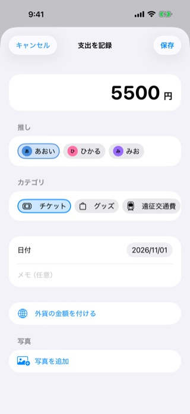
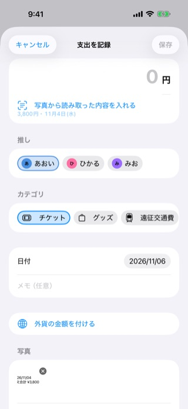
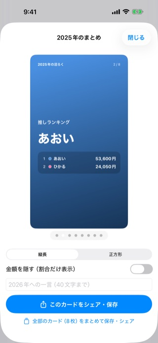
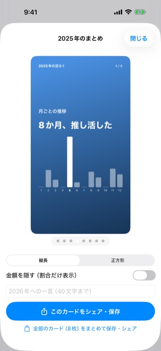
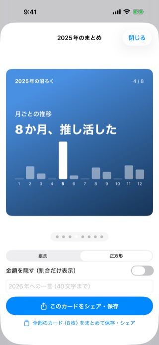
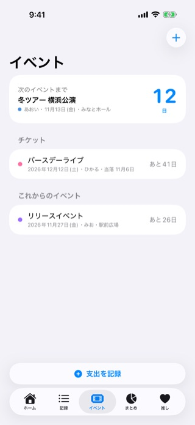
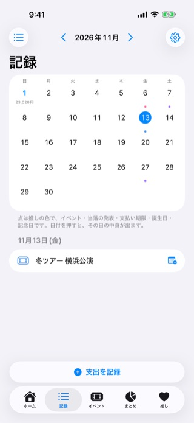

記録
買ったその場で、3ステップ。
開くとすぐにテンキー。前回の推しとカテゴリを覚えているので、続けての記録もかんたんです。
- 金額を入れるチケット・グッズ・遠征・配信、なんでも
- 推しを選ぶ複数の推しにまたがる買い物は、分けて記録
- 保存するホームの合計と内訳に、すぐ反映
アプリを開かなくても、記録できます
- ホーム画面のウィジェット
- コントロールセンター
- アクションボタン
- Siri
- レシートを撮る
- スクショを共有
レシートやスクリーンショットの読み取りは iPhone の中だけで行います。うまく読めないこともあるので、入れる前に確かめてください。音声の聞き取りは Apple の Siri が行います。


推し活ならでは
家計簿じゃなくて、推し活の記録。
使ったお金を責めるためではなく、推しを好きだった時間を残すために。
見せるときモード
友だちに見せても、金額は伏せ字。
人に画面を見せるときは、金額を伏せ字に。画面の収録中は自動で切り替わります。
見送り記録
買わなかった額も、記録に。
買うのをやめたものを「見送り」として記録。見送った金額が貯まっていきます。
推しごと・月ごとの内訳はプレミアム
推し活カレンダー
支出と予定を、ひと月で。
支出とイベント・当落・支払い期限・推しの誕生日を、ひと月で見渡せます。
iPhone のカレンダーへの追加はプレミアム
ふり返り
今月の推し活を、1枚に。
毎月1日に、先月のまとめ画像。推しのランキング、いちばん大きな推し活。金額を隠して、割合だけでシェアもできます。12月1日からは、1年をふり返る年間まとめも。
毎月のまとめ

年間まとめ（12月から）

ストーリー向けの縦長

投稿向けの正方形
年間まとめは、総額と「推して◯日」の2枚が無料。全カードとまとめて保存はプレミアム。無料版のまとめ画像には小さく「沼ろく」の透かしが入ります。
無料ではじめられます・登録不要
イベント
次の現場まで、あと何日？
ライブや舞台の日を登録すると、ホームとウィジェットに「次のイベントまで◯日」。チケットの当落や支払い期限も、まとめて管理できます。
- 申込中 → 当落 → 支払いチケットの状況を記録
- 大事な日にお知らせ当落の発表日、支払い期限の前日と当日、イベント当日の朝
- 「支払った」でそのまま記録チケット代を支出に
お知らせは iPhone の設定などにより届かないことや遅れることがあります。支払い期限は、チケットの販売元の案内でもお確かめください。


安心
記録は、あなただけのもの。
沼ろくには、運営者のサーバーがありません。
iPhone と、あなたの iCloud にだけ
記録は、あなたの iPhone と、あなた自身の iCloud にだけ保存されます。運営者があなたの記録を見ることはありません（お問い合わせで送っていただいた場合を除きます）。
登録なし・広告なし
アカウントの登録は不要。アプリには広告も、外部の解析ツールも入っていません。このウェブサイトも、Cookie・アクセス解析・外部の読み込みを使っていません。
読み取りは iPhone の中で
レシートやスクリーンショットの文字の読み取りは、iPhone の中だけで行います。
Face ID・Touch ID でロック
アプリを開くときにロックを解除するようにできます。ロック中は、ウィジェットにも金額を出しません。
消してしまっても、戻せます
週1回と、戻す・読み込む前に、自動でバックアップ（この iPhone の中・最新8世代）。バックアップの時点の記録に戻せます。機種変更や故障に備えるなら、iCloud の同期をオンに。
CSV でいつでも持ち出せる
記録は CSV で書き出せます（写真は含みません）。運営者の名前と連絡先は、特定商取引法に基づく表記に載せています。
料金
基本は、ずっと無料。
記録・合計と内訳・ロック・バックアップは無料で使えます。もっと深くふり返りたい人に、沼ろくプレミアム。
| できること | 無料 | プレミアム |
|---|---|---|
| 推しの登録・支出の記録・合計と内訳 | 無制限 | 無制限 |
| ワンタップ記録・見せるときモード・見送り記録・レシートの読み取り・推し活カレンダー・イベントとチケット・ギャラリー | 使える | 使える |
| iCloud 同期・自動バックアップ（写真も含む）・CSV・ロック | 使える | 使える |
| 支出1件に付けられる写真 | 1枚まで | 100枚まで |
| 毎月のまとめ画像 | 小さな透かし入り | 透かしなし |
| 年間まとめ | 総額と「推して◯日」の2枚 | 全カードとまとめて保存 |
| 推し×カテゴリの集計・前年比・月平均 | ― | 使える |
| 推しごとの予算 | 全体の予算だけ | 使える |
| 「今月の支出」・推しの写真のウィジェット | ― | 使える |
| 見送った金額の推しごと・月ごとの内訳 | 合計だけ | 使える |
| イベント・当落・支払い期限を iPhone のカレンダーに追加 | ― | 使える |
| 海外で払った支出に、元の通貨と金額 | ― | 使える |
| 推し色のアプリアイコン | ピンク | 8色 |
-
おすすめ・{{trial_days}}の無料体験あり
年額プラン
{{price_yearly}}（税込）／年
1年ごとに自動で更新されます。
年額・月額プランを使ったことのない Apple アカウントは、1回だけ{{trial_days}}無料。無料体験が終わる24時間前までに解約しないと、無料体験の終了時に年額 {{price_yearly}}（税込）が Apple アカウントに請求され、以後1年ごとに自動で更新されます。
-
月額プラン
{{price_monthly}}（税込）／月
1か月ごとに自動で更新されます。
-
買い切りプラン
{{price_lifetime}}（税込・1回のお支払い）
自動で更新されません。アプリの提供中は、追加の料金なくプレミアムの機能が使えます。
{{price_as_of}}時点の価格です。最新の価格と無料体験の有無・期間は、App Store とアプリの購入画面の表示が優先されます。
- お支払いは Apple アカウントに請求されます。
- 年額・月額プランは、各期間が終わる24時間前までに解約しない限り、同じ期間で自動的に更新され、各期間が終わる前の24時間以内に次の期間の代金が請求されます。
- 無料体験は、沼ろくプレミアムの年額・月額プランをこれまでに利用したことがない Apple アカウントに、1回限りです。無料体験中に解約すると、その時点でプレミアムの機能が使えなくなる場合があります。
- 解約は iPhone の「設定」→ ご自分の名前 →「サブスクリプション」から。アプリを削除しても解約にはなりません。
- 年額・月額プランのご利用中に買い切りプランを購入しても、サブスクリプションは自動では解約されません。
- 購入の完了後は、法令に定めがある場合を除き、申込みを撤回できません。期間の途中で解約しても、残りの期間分の料金は日割りで返金されません（法令に定めがある場合を除きます）。返金は Apple の定める手順と基準によります（https://reportaproblem.apple.com/）。
ほかにも
推し活の「あったらいいな」を、ひととおり。
の印がある部分は、沼ろくプレミアム（有料）の機能です。
{{{features_html}}}よくある質問
{{{faq_html}}}推し活の毎日を、沼ろくで。
iOS 26 以降の iPhone に対応しています（iPad・Android には対応していません）。沼ろくは App Store でだけ配布しています。
{{{store_cta}}}サポート・お問い合わせ
使い方やよくある質問は サポート をご覧ください。お問い合わせはメールで受け付けています。
お問い合わせの際は、お使いの iPhone の機種と iOS のバージョンをお書きください。運営者が Apple アカウントのパスワード、お支払いの情報、確認コードをお聞きすることはありません。